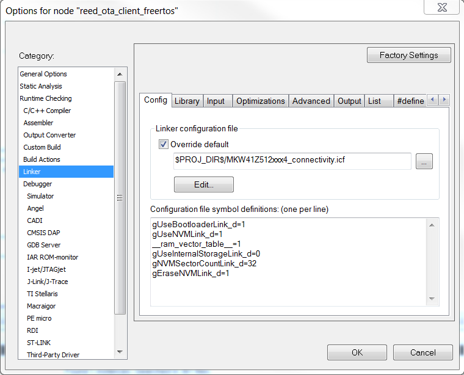

The files app_ota.h, app_ota_client.c, app_ota_server.c, OtaSupport.c, OtaSupport.h
comprise the OTA Upgrade functionality. All configurations are done at compile time. The
configuration settings needed to enable the OTAServer and OTAClient functionalities are
available in the config.h file of the corresponding example project and have already
been set to the appropriate values.
- gEnableOTAServer_d = TRUE – enables the OTA Server functionality;
- gEnableOTAClient_d = TRUE – enables the OTA Client functionality;
- gEepromType_d = gEepromDevice_
AT45DB041E_c
– use this particular EEPROM device type to store the image in the external flash of
the client for FRDM-KW41 boards. For other boards, check
Eeprom.h;
- OTA_USE_NWK_DATA = TRUE – includes the OTA server data in a Service TLV in Network
Data packets, so each board will always be aware of the server’s short address.
OTA client/server initialization is performed by the following API:
- OtaClientInit(mpAppThreadMsgQueue);
- OtaServerInit(mpAppThreadMsgQueue);
OTA client project options;
- gUseBootloaderLink_d=1 – sets the linker configuration file to reserve the first
flash sector for bootloader use with the application firmware following in the
subsequent sectors.
- gUseInternalStorageLink_d=0 – use external flash for temporary storing the image
sent over the air; otherwise uses the internal flash.
- gEraseNVMLink_d=1 – includes NVM firmware sectors in OTA file, and will
overwrite those sectors when performing OTA update. When using .bin format,
gEraseNVMLink_d must be set to 0 to preserve NVM data.
- gNVMSectorCountLink_d=32 – allocates 32 sectors of NVM, each having 2 kB of
memory.
- gUseNVMLink_d=1 – sets the linker configuration to access the NVM.
- __ram_vector_table__=1 – places the vector table in RAM and allows dynamic insertion
of an ISR handler.
The following figures describe how to update the symbols definition of the Linker
configuration files for IAR IDE.
Figure 1. IAR Linker Configuration Options

In the case of MCU Xpresso IDE, the linker file for the ota client project is preconfigured with the appropriate settings.